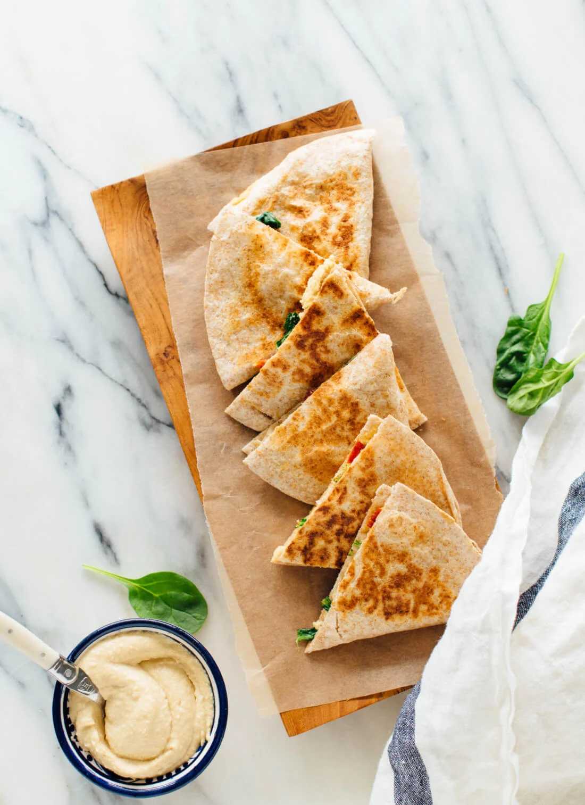

Hummus Quesadillas

Ingredients:
- One 8-inch whole grain tortilla (or gluten-free tortilla for gluten-free quesadillas)
- ¼ to ⅓ cup hummus of choice
- Fillings of your choice (I used a handful of sautéed spinach in olive oil, rinsed oil-packed sun-dried tomatoes, and some thinly sliced Kalamata olives)
- Extra-virgin olive oil, for brushing
- Optional, for serving: additional hummus, hot sauce, pesto, etc.
Instructions:
- Spread hummus generously over your tortilla. Lightly cover
one-half of the tortilla with fillings of your choice. Fold the
blank half over to create a half-moon shape. Repeat if you’d like
to make more than one quesadilla; you can cook up to two at a time
in the same skillet.
- Warm a medium skillet over medium heat. Place the folded
quesadilla(s) in the pan. Let the bottom sides warm up for a
minute or two, then carefully flip. Brush the warm sides lightly
with olive oil and let them cook in the pan for another minute or
two. Carefully flip once again, brush the new top side lightly with
olive oil, and cook until the bottom is lightly golden and crisp.
Carefully flip and cook until that side is lightly golden and crisp.
- Transfer the quesadilla(s) to a cutting board and let them rest
for a couple of minutes. Then, use a sharp chef’s knife or pizza
cutter to slice each quesadilla into three wedges. Serve
immediately. I enjoyed mine as-is, but you might like some
additional hummus on the side, or perhaps some hot sauce or a
dab of pesto.